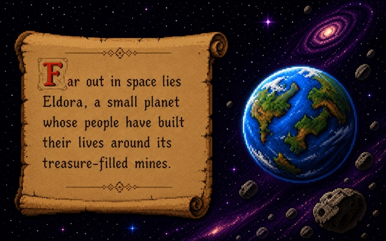
Prologue
Everything begins beneath Eldora.
Day after day, miners descend into treasure-filled caves to recover gold, diamonds, and precious minerals—the foundation of life on their small world.
v 1.5 The maze-action classic returns
Save the treasure-filled mines of Eldora across five distinct worlds and ten handcrafted caves in a focused single-player campaign.
€4.99 / $4.99Regional store pricing may vary
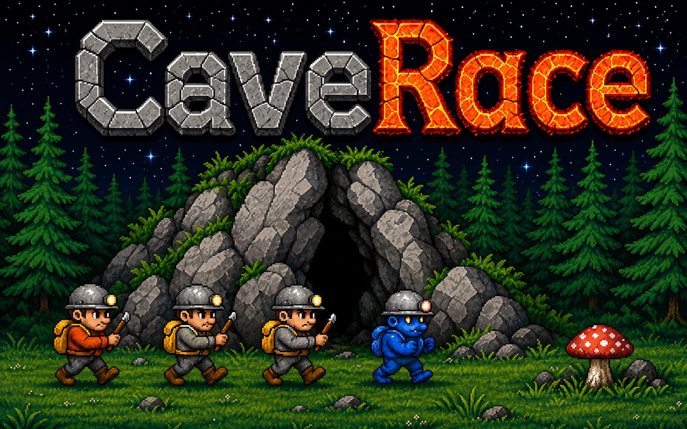
5Distinct worlds
10Handcrafted caves
16Enemies to defeat
The story of CaveRace
Far out in space lies Eldora, a small planet whose people have built their lives around the riches hidden beneath its surface.

Day after day, miners descend into treasure-filled caves to recover gold, diamonds, and precious minerals—the foundation of life on their small world.
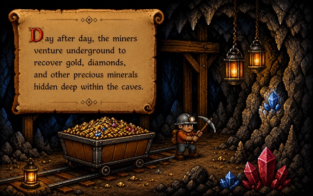
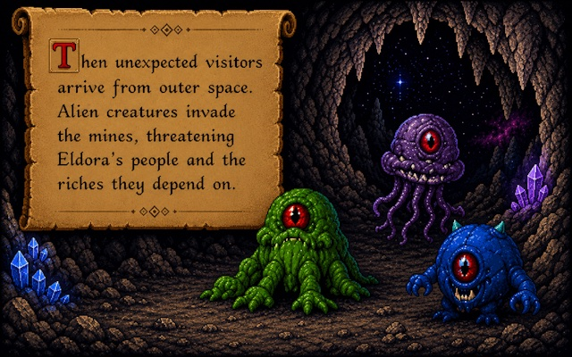
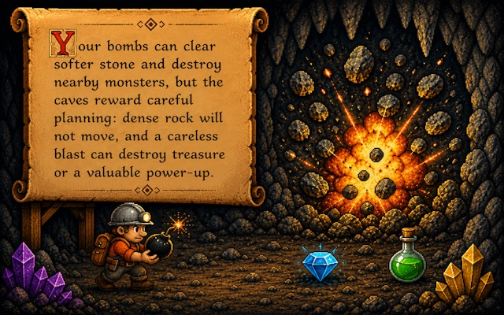
You are one of Eldora's miners. Collect as much treasure as you can, use your explosives to open a route, and drive out every alien. Every explosion can reveal a path—or create a new danger.
Explore the five worlds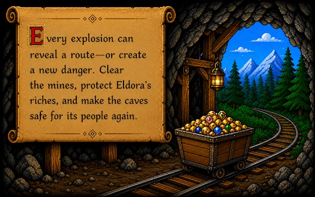
Five worlds. Two caves each.
Travel through five distinct underground worlds. Each theme returns for a tougher second cave as the campaign closes in on its final blast.
Green caverns, open water, and the first signs of the invasion.
Snow-bright passages where safe routes can disappear quickly.
Dry earth, exposed stone, and increasingly aggressive invaders.
Dark ground and tight approaches leave little room for mistakes.
Fire-lit caves bring the campaign to its hottest final challenge.
One complete run: ten original caves across five worlds, playable in about one hour.
Real CaveRace gameplay
Dense rock will not move. A careless explosion can destroy treasure or a valuable power-up. Think ahead, then light the fuse.
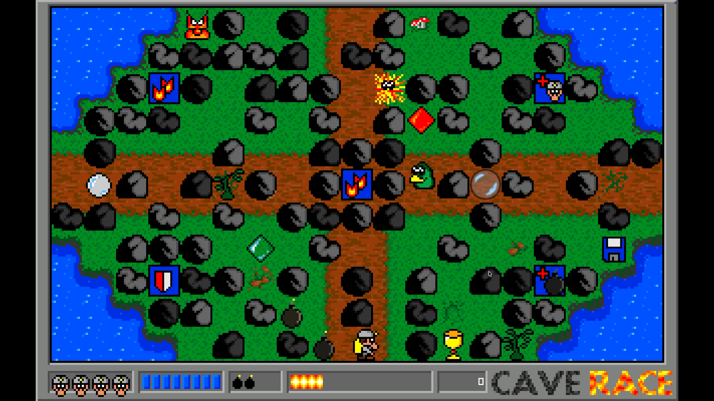
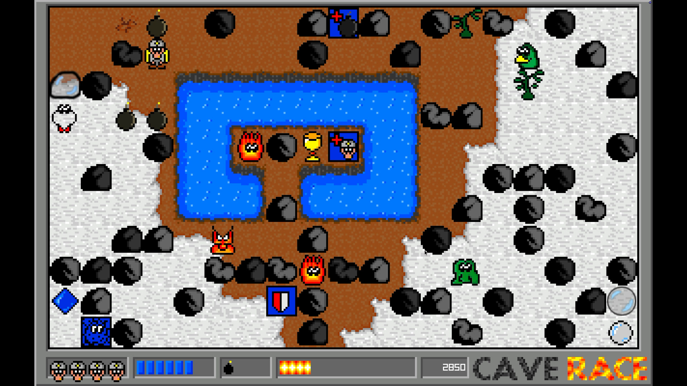
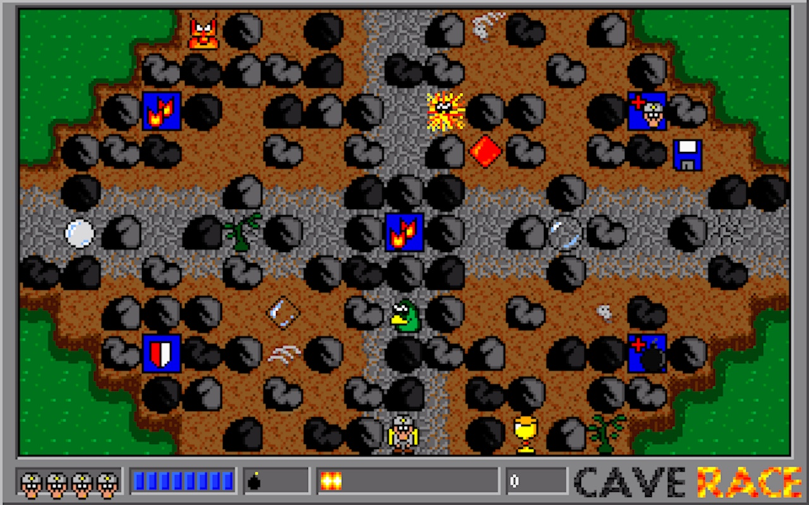
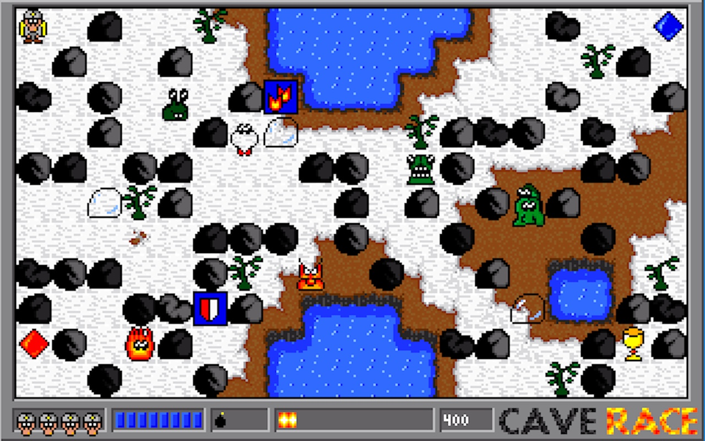
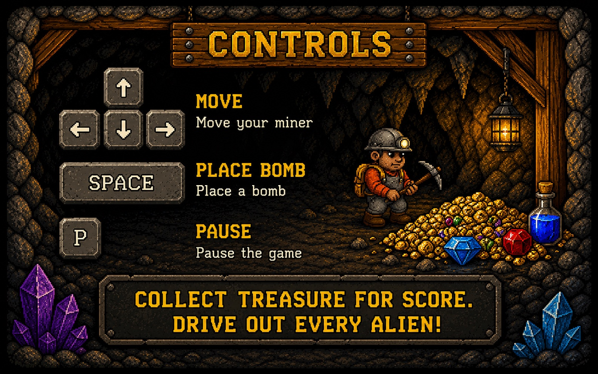
Play your way
Standard mode keeps the intended challenge. Assisted mode gives new players more room to learn how each cave works.
From 1997 to today
CaveRace began as an MS-DOS maze-action game. Version 1.5 brings its five worlds, ten caves, pixel-art identity, sounds, and deliberate bomb-based play to current Windows and Mac systems.
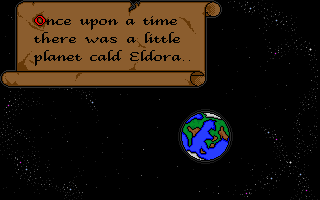
A compact DOS-era game built around ten handcrafted caves, careful bomb placement, treasure, and alien invaders.
A from-scratch modern edition for Windows and Mac, released by NavaTron Game Studios.
Free, unsupported historical editions for visitors who want to explore CaveRace's earlier releases. These old programs may require compatible hardware, a virtual machine, or an emulator.
SHA-256 94f3e5bcb7a95efd924cb6a1930b02b29081fd73e3dbe1ef917d3349b6f59a93
SHA-256 56661d2eb9c34e87eeb2b70189a33d5ab6e7e6038a782290179b05710d0bf246
Before you enter
Need help with CaveRace? Email support@caverace.com.
CaveRace 1.5 is a from-scratch modern edition that preserves the ten original caves, artwork, sounds, story, and core rules.
Yes. CaveRace is a focused single-player game with no multiplayer or online modes.
The complete campaign contains ten handcrafted caves across five visual worlds: Forest, Winter, Desert, Oil, and Lava. Each world appears twice.
A complete run through all ten caves takes about one hour, depending on your route planning, difficulty choice, and experience.
No. The game itself makes no network connections, collects no personal data, and requires no account. A Store connection is still needed to purchase, download, and receive updates.
No. The purchase includes the complete game, with no advertising or in-app purchases.
Yes. CaveRace supports compatible controllers as well as keyboard and mouse input.
Windows requires Windows 10 version 1809 or later on a 64-bit x86 system. macOS requires macOS 10.15 Catalina or later and supports both Intel and Apple silicon.
Standard mode preserves the intended challenge. Assisted mode makes the campaign more forgiving while keeping the same caves and core play.
Steam Deck compatibility has not yet been evaluated. The website will be updated after testing or an official Valve compatibility result.
The caves of Eldora are waiting
One complete single-player game for €4.99 / $4.99. Store pricing may vary by region.